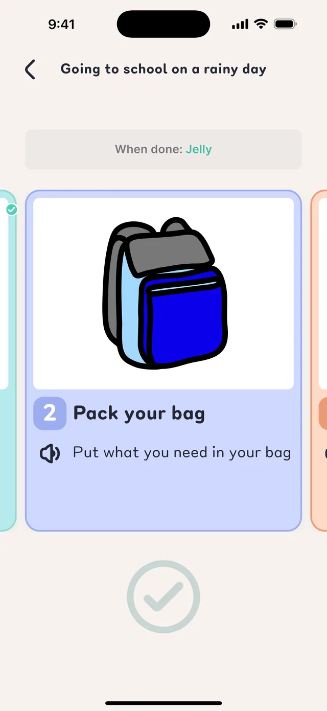
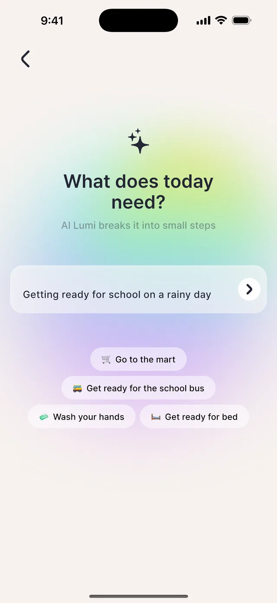
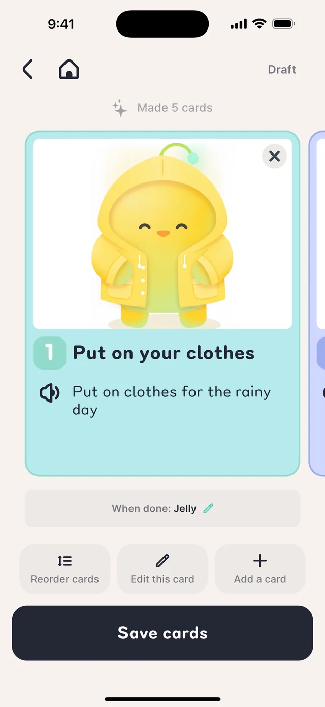
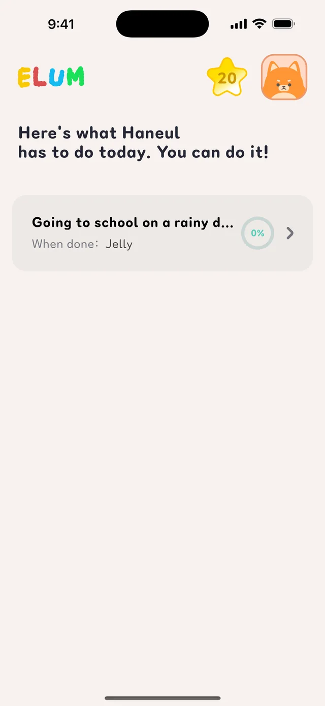
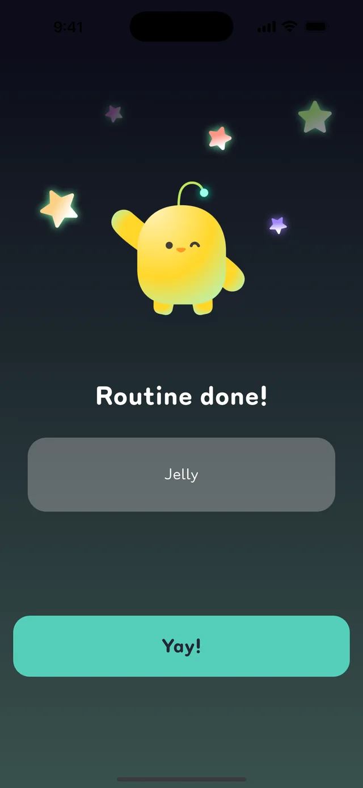
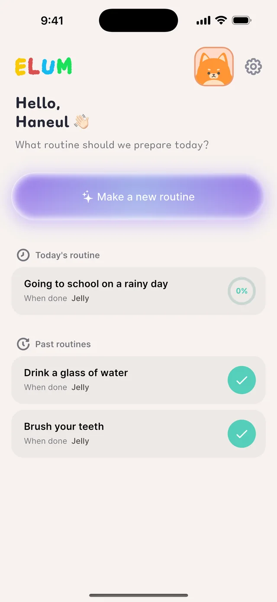

Action cards
Daily routines,
Daily routines,
one card at a time
Pictures and short sentences show today's steps in order

Write one line the way you'd say it, and ELUM turns it into easy picture cards in order. Cards only appear on Elumi's phone after the guardian checks them.
Stuck? See the FAQ or contact us.
Describe the situation the way you'd say it, like “Get ready for school on a rainy day”.
It's split into small steps with a picture and a short sentence. The guardian edits and checks them.
One card at a time, with a check for each. Stars and the promised reward wait at the end.
Getting ready for school, morning routines, washing and brushing teeth, going out, bedtime — the things you do every day, as a visual schedule.
Pictures and short sentences show today's steps in order

Type it the way you'd say it, and it's split into small, easy steps

Edit pictures and words, reorder steps, or add a card

Link two phones and new routines show up right away

Lumi, Ruru and Popo cheer along

Invite others to share routines, and reuse past ones in one tap

Available on the App Store and Google Play.
Can't find your answer? Email us below.
E-1001) so we can find where it stopped.We reply within 2–3 business days.